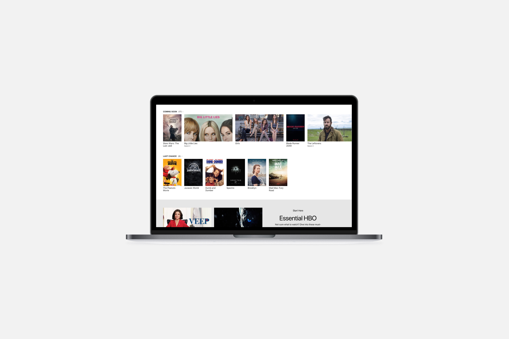

HBO
2017. 10 weeks.
UX/UI Design. Web Design.
At HBO I worked as a User Experience Design intern for the digital products team at the company. I helped on 3 teams; Purchase/Identity, Design Foundation and Interactive.
I actively participated in sprints, experimented on experiences with AI assistants and worked closely with the designers on design decisions, iterations of interfaces and user testing.
My exact contributions included iterating and testing mobile application designs, creating flows to facilitate conversations through Amazon Alexa for HBO’s content and starting the complete redesign of HBOGO.com.

This page shows the work I did on the redesign of HBO's web platform as it was my main focus for the 10 weeks I spent there.
On the current site, the loading of a new page on every click is a lengthy back and forth process to explore content. This creates a big jump in the information provided to the user from hover to the asset detail page.
On the proposed site, incremental information at different stages will curtail the drill-in/drill-out. This means that both more functionality and more stages, such as the interstitial, would improve the tiresome and inefficient process that limits the user from exploring content.
We explored different navigation models by creating wireframes that represented the general layout of the website.
The main approach was to identify and focus on the unique strengths of the desktop experience. The goal of the developed shell model was also to make sure the users could explore the content easily without having to commit to an asset and express the breadth of categories.
The next step in the process included more detailed work into figuring out exactly what functionality and information would be available in different parts/stages of the website.
For the navigation, considering our finalized shell model for the website, we narrowed down to a couple of models.
After much consideration of what incremental information needs to be provided through the 3 possible stages of an asset (hover, interstitial and full page), these stages were finalized upon.
Although, after being told that the specific details of where certain information and metadata would be placed are a consideration for a longer project timeline, the focus was drawn to the practicality of the broader website structure and how we could best convey the biggest factors of the redesign.
After exploring certain features of the hover stage, the next step, and the most complex part of the project was the interstitial or the stage between hover and the asset detail page.
For this we briefly explored 3 narrowed down possibilities. Due to reasons such as reducing information overload and the drill-in/drill-out process and embracing the strengths of the desktop, we decided to move forward with 'carousel zoom'.
Carousel zoom allows users to have a selective focus and emphasizes the content while making sure the user can still quickly browse through the carousels on the home page.
We put the details together to be able to tell the story of what we redesigned and made an Invision prototype to convey a walkthrough and make certain aspects less confusing.
Invision Prototype